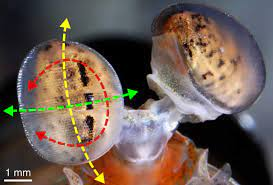
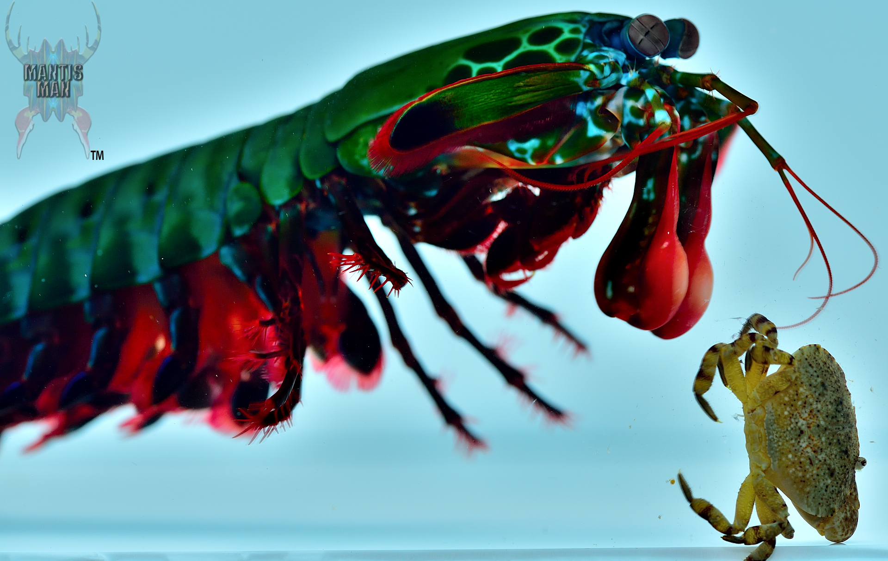
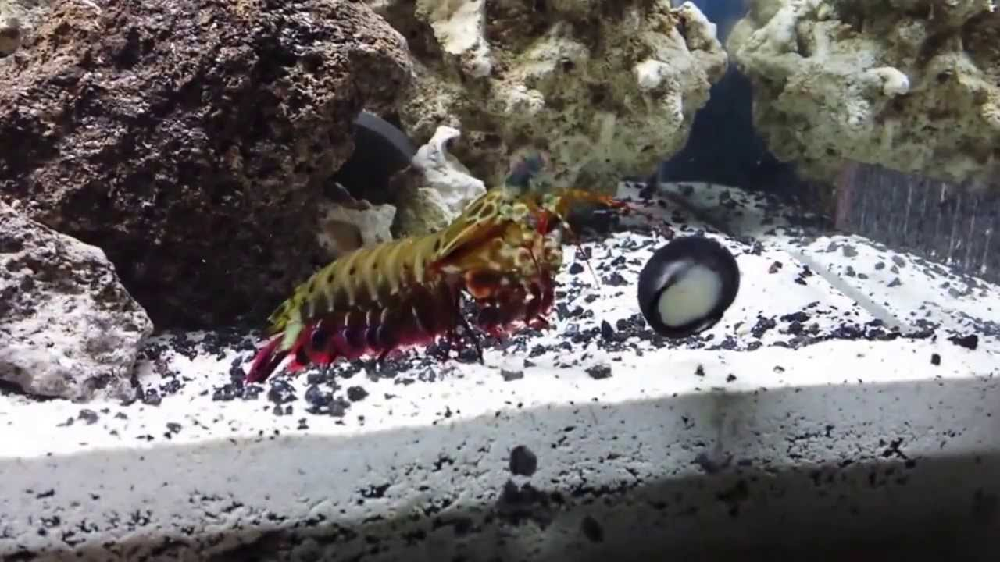

Fatos sobre o Stomatopoda
Quantas cores num arco-íris?
Nós humanos achamos que enxergamos bem. Pelo menos melhor que nossos melhores amigos, os cães. Mal sabemos que somos praticamente cegos se comparados aos Stomatopoda. Os indivíduos desta ordem de crustáceos marinhos possuem mais de cinco vezes mais cones receptores de cores nos olhos. Imagina como esses carinhas veem um arco-íris!?
Popó submarino
Como se uma supervisão não bastasse, esses bichinhos ainda são capazes de mover seus membros dianteiros tão rapidamente que a água em torno deles ferve. A velocidade dos golpes chega a 720km/h, ou o equivalente a um tiro calibre .22! Toda essa movimentação cria bolhas que, ao estourarem, Assim, eles criam bolhas que, ao estourarem, produzem uma onda de choque sonoluminescente que mata suas presas mesmo que eles errem o golpe. Um verdadeiro Popó submarino!
Nada de aquário
Como vimos na seção anterior, a patada dos Stomatopoda pode ser fatal para outras formas de vida submarina, mas também para os vidros de aquários! Todos essa força pode quebrar vidros menos preparados. Imagina o prejuízo!
